Project overview
The product
Eco-Cash is a mobile application that uses gamification and AR to encourage students to engage with Indiana's forests. Users visit forest areas, complete conservation tasks — from planting saplings to photographing biodiversity — and earn points redeemable at campus vendors like Starbucks via their Crimson Card.
The mandate
Indiana University's Grand Challenge on Environmental Change challenged students to address deforestation at a scale where technology could offer a practical solution. The goal was to narrow a planetary-scale problem to a specific, actionable intervention that students could own.
Design a collaborative mobile application that raises public consciousness about deforestation by making forest visits social, rewarding, and habit-forming for Indiana students.
My role
As a core team member on Eco-Cash, I led user research, owned the visual design, and drove usability testing and prototyping from low-fidelity sketches through to the final hi-fi screens.
This was an 8-week sprint under real-world constraints: no direct access to forest rangers, limited budget, and the need to ground every design decision in evidence gathered through field research and expert interviews.
The problem
"The exploitation of the wilderness has led to various domino effects — global warming, soil erosion, loss in biodiversity. Indiana's forests are continuously going through simultaneous changes, with rising temperatures impacting everything from air quality to agriculture."
400% logging increase
Logging on Indiana state forests increased at least 400% since 2002, dramatically reducing old-growth canopy and wildlife habitat.
Wildlife set-asides collapsed
Before 2005, 40% of Indiana state forests were maintained for wildlife. By 2018, that figure had fallen to just 3%.
Conservation funding dried up
The Benjamin Harrison Conservation Trust has seen its primary revenue decline by more than 50% over the last 20 years.
Only 4% of land protected
As per HEC, only 4% of Indiana's land area is protected for ecological value or outdoor recreation — one of the lowest rates in the region.
Research & discovery
We used three complementary methods to build a complete picture: secondary research to establish the scale of the problem, competitive analysis to understand the market, and field research to see Indiana's forests firsthand.
Secondary research
Reviewed forestry data, environmental reports, and Indiana state records to quantify the deforestation problem and establish a factual baseline.
Competitive analysis
Mapped existing solutions — apps like EcoTour, conservation platforms — to identify gaps and opportunities for a gamified, location-based approach.
Field research
Visited Military Park, Canal Walk, and surrounding sites — lab testing can't replicate what you observe when you go there yourself.
Field research: what we saw
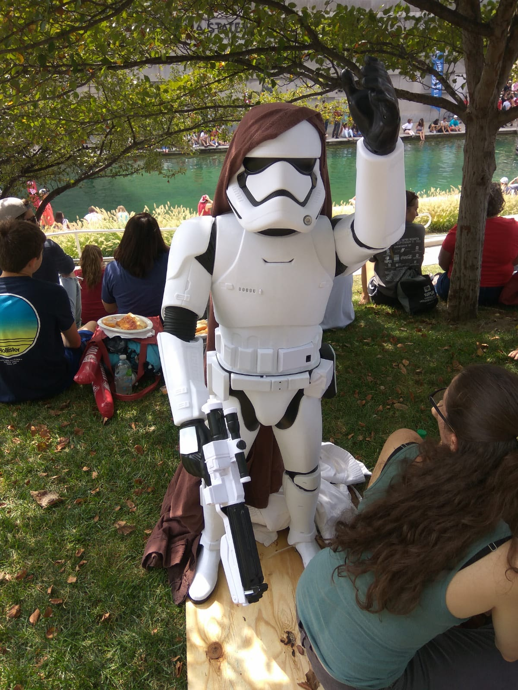
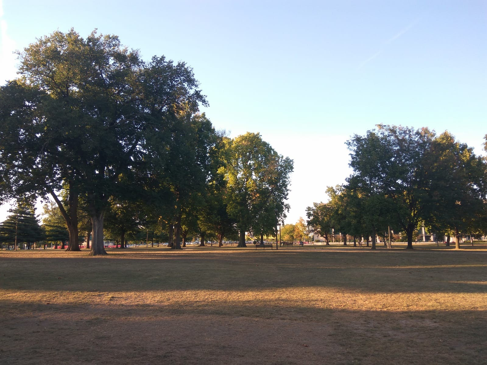
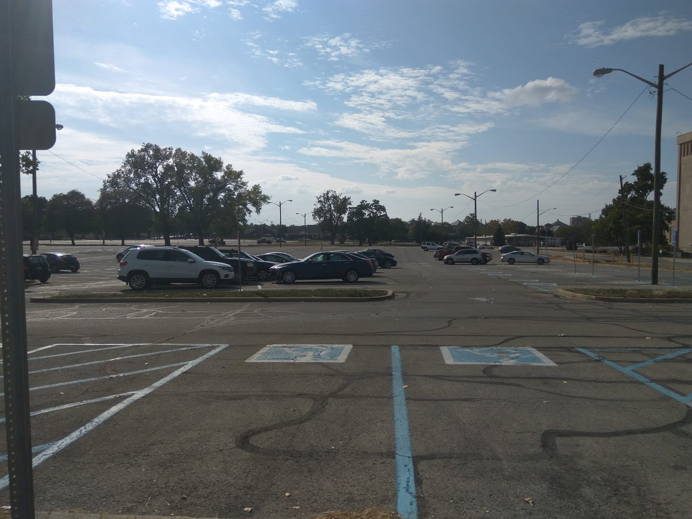
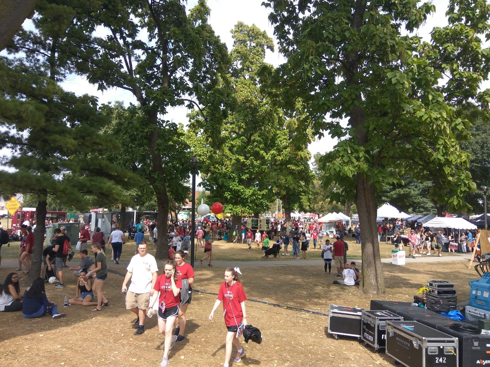
User interviews
We interviewed officials from the Indiana Forest Alliance — protecting forests for 25+ years — plus 10 millennial participants, combining expert knowledge with real end-user perspectives.
"Forests are being lost to development. Once changed into another land-use, they are rarely allowed to revert back — habitats are usually permanently lost."
"Earlier in my days, there were many farm fields across Speedway. My uncle had a farm field — all of it is now developed and converted into urban areas."
"I believe technology could be the answer to all this."
What the research kept saying
Affinity mapping
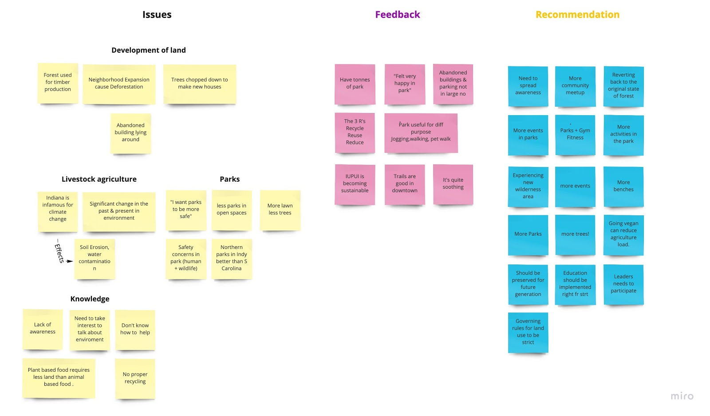
Awareness ≠ action
People know climate change is happening but aren't sure how it occurs or where they can personally contribute. The gap between concern and behavior was the central design challenge.
Students want parks, not lectures
Hoosiers want more parks and trees — and most users were already interested in exploring nature. The design had to meet them there, in the forest, not in a classroom or an app that lectures about climate change.
Tangible rewards drive behavior
College students respond to concrete incentives. Points redeemable at Starbucks via the Crimson Card created a reward loop tied directly to existing student infrastructure — no new habit required.
Technology as the credible bridge
Multiple participants believed technology could solve the engagement problem. AR offered a way to make invisible things visible — exactly where to plant, what tasks exist — guiding people without requiring prior expertise.
User personas
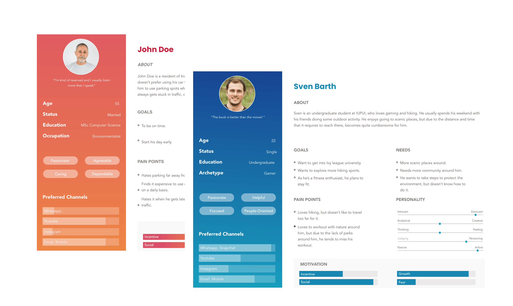
Ideation & direction
With research insights in hand, we reframed the problem. From 50 brainstormed ideas, Eco-Cash emerged as the concept that hit all three feasibility dimensions — technical, social, and economic.
How do we develop a collaborative application that will raise public consciousness about deforestation?
Three functional pillars
Motivate
Get users more involved through task-driven engagement tied to real places they can reach.
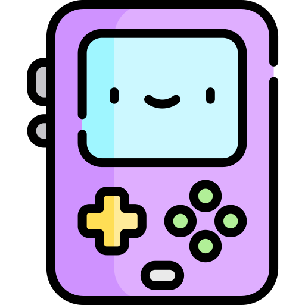
Gamify
Make conservation engaging through AR-guided tasks, points, progress, and social sharing.
Reward
Redeem points for real value — Starbucks via Crimson Card — creating a tangible incentive loop.
Feasibility check
Technical: Partnering with an established AR provider like EcoTour reduces build time significantly — leveraging existing infrastructure rather than building from scratch.
Social: Target users are college students who will embrace earning cash-like points — the reward model fits existing student behavior around deals and campus discounts.
Economic: Starbucks and similar brands benefit from student engagement — a co-sponsorship model means the incentive is funded by the businesses, not the university or the app.
Storyboarding the experience
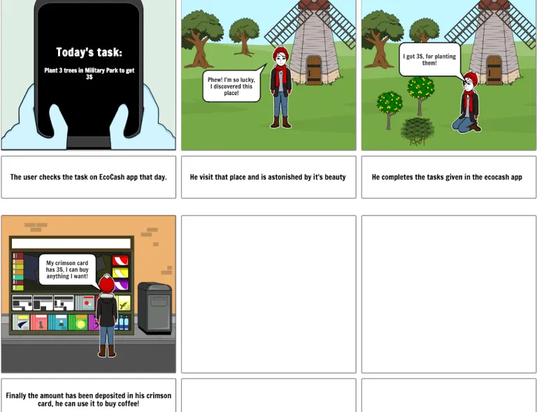
The solution
Three phases: paper prototypes to establish the skeleton, heuristic evaluation to find and fix critical issues, then hi-fi screens implementing what we learned. Every problem found in testing was solved before the next phase began.
Pen and paper first

Three critical issues found and fixed
Applying Nielsen's 10 Usability Heuristic Principles plus a cognitive walkthrough (Spencer methodology) surfaced three issues that would have broken the experience. Each was resolved before hi-fi work began.
Three core flows
Forest availability
Browse available forest areas nearby, see task descriptions, difficulty, and estimated visit time before committing to a trip. The discovery surface had to be compelling enough to motivate the first visit.
Show distance, task count, and point value before the user commits — reducing the friction of "is it worth going?" before they leave campus.
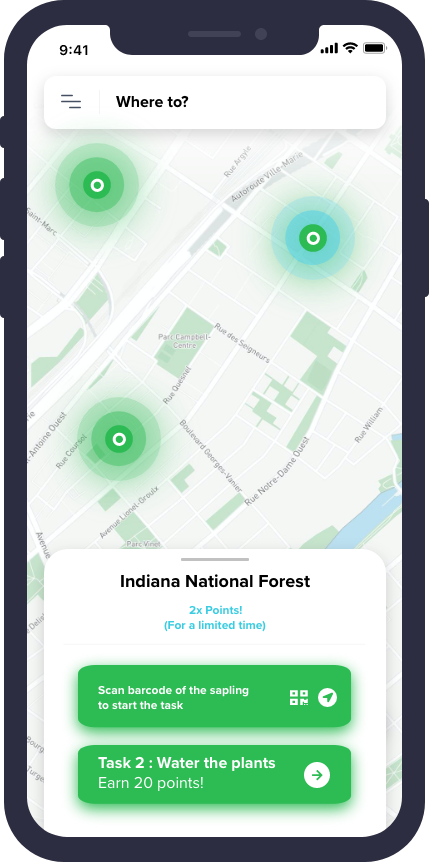
AR mode
Once in the forest, AR mode overlays task locations in real space — pinpointing where to plant saplings, photograph wildlife, or complete conservation activities. No expertise needed.
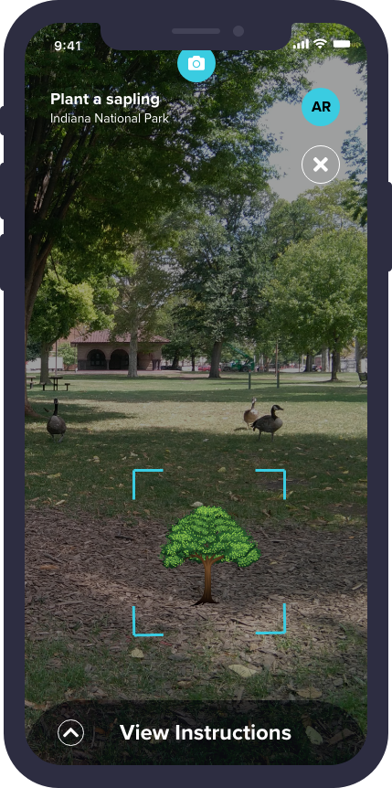
Rewards
Completed tasks earn points tracked in-app. The Rewards screen shows the embedded Crimson Card barcode for instant redemption at Starbucks — the fix from heuristic testing made real.
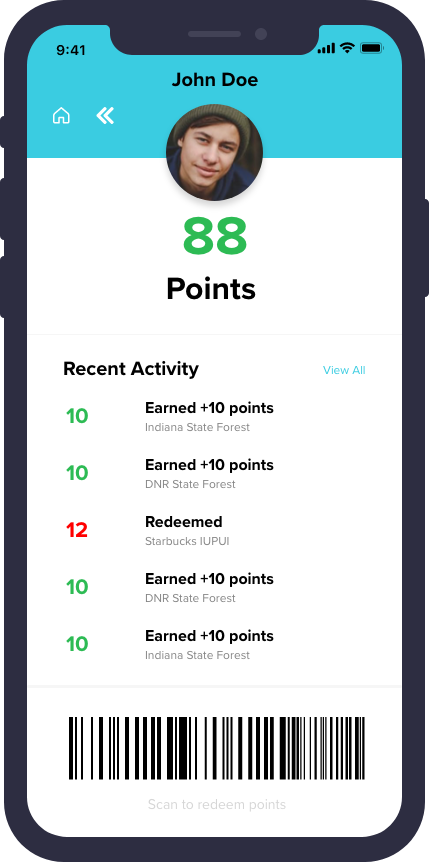
The entire reward flow had to work without the physical card. If redeeming was harder than showing the card, the digital loop would break. Convenience is what makes the habit stick.
Where it goes from here
Institutional partnerships
Collaborate with schools, universities, and conservation organizations to organize structured student trips and awareness campaigns at scale.
EcoTour integration
Formalize the AR partnership with EcoTour to expand technical capabilities and reach more forest areas without rebuilding the infrastructure from scratch.
Expanded forest network
Onboard more forest areas by coordinating with state authorities and conservation bodies, growing the task catalog and geographic reach across Indiana.
Eco-Cash was my first exposure to the full design process under real constraints: no direct access to half our audience, field research replacing lab sessions, and a wicked problem with no obvious technology solution. What it reinforced is that the design process — research, synthesis, ideation, test, iterate — is the method, not just a framework. You don't skip steps because the problem is hard; you do them more carefully.